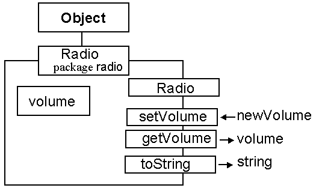
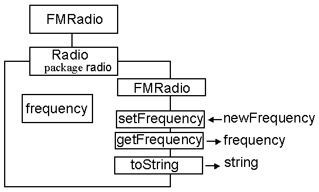

Waypoint 1 Assessment Version A
- You must complete this assessment by the end of the
lab session when it is issued to you.- You may only ask your tutor for assistance, a score of
zero may be recorded if you are assisted by anyone else.- You must have your workbook available for inspection.
- You must return this page before the end of the session.
Complete the quiz, which should take no more than 15 min, and have the mark recorded by your tutor above. Then do the following.

This is the class diagram for the Radio class which is in the radio package of classes. It has two attributes. The volume attribute determines the volume of the Radio and should always have a value between 0 and 10. The constructor will ensure that the value of volume is set to 5.
The setVolume() method will set the value of the attribute to the value of its argument and the getVolume() method will return the value of the attribute. The toString() method will produce an output such as "The volume is set to 5".
A first implementation of this class is available from Radio.java and a demonstration program, called RadioDemonstration.java is available from the same location. The setVolume() method is not working and should be implemented to change the value of the volume attribute to the value of the argument newVolume if it is between 0 and 10 (inclusive); otherwise it should not change the value of the attribute.

The FMRadio class extends the Radio class and provides a frequency attribute which should always be between 78.0 and 110.0, with a default value of 93.5 (BBC Radio 4!). The setFrequency() and getFrequency() methods manipulate this attribute as for the volume methods of the radio class. The toString() method should produce an output something like "The frequency is set to 93.5.\nThe volume is set to 5".
A first implementation of this class is available from FMRadio.java and a demonstration program, called FMRadioDemonstration.java is available from the same location
DO NOT MAKE ANY CHANGES TO THE DEMONSTRATION FILES!
0001 // Filename radio/Radio.java
0002 //
0003 // SSD Assessment version A
0004
0005 package radio;
0006
0007 public class Radio extends Object {
0008
0009 private int volume = 5;
0010
0011 public Radio() {
0012 super();
0013 volume = 5;
0014 } // End Radio constructor.
0015
0016
0017 public void setVolume( int newVolume) {
0018 volume = newVolume;
0019 } // End setVolume
0020
0021 public int getVolume() {
0022 return volume;
0023 } // End getVolume.
0024
0025
0026 public String toString() {
0027 return "The volume is set to " +
0028 this.getVolume() + ".";
0029 } // End toString
0030 } // End class Radio.
0001 // Filename radio/RadioDemonstration.java.
0002 //
0003 // SSD assessment version A
0004
0005 package radio;
0006
0007 public class RadioDemonstration extends Object {
0008
0009 public static void main( String argv[]) {
0010
0011 Radio aRadio = null;
0012
0013 System.out.println( "\n\n\t Radio Demonstration");
0014
0015 System.out.print( "\n\nConstructing an instance ... ");
0016 aRadio = new Radio();
0017 System.out.print( "Instance created ... ");
0018
0019 System.out.print( "\n\nDemonstrating getVolume() "+
0020 ", it should be 5 ... ");
0021 System.out.println( aRadio.getVolume());
0022
0023
0024 System.out.print( "\n\nSetting the volume to 9\n" +
0025 "& getting it again,\n"+
0026 "it should be 9 ... ");
0027 aRadio.setVolume( 9);
0028 System.out.println( aRadio.getVolume());
0029
0030 System.out.print( "\n\nSetting the volume to 20\n" +
0031 "& getting it again,\n"+
0032 "it should sill be be 9 ... ");
0033 aRadio.setVolume( 20);
0034 System.out.println( aRadio.getVolume());
0035
0036
0037
0038 System.out.println( "\n\nDemonstrating toString().");
0039 System.out.println( aRadio);
0040
0041 System.out.println( "\n\nEnd of Radio Demonstration");
0042 } // End main.
0043
0044 } // end class RadioDemonstration.
0001 // Filename radio/FMRadio.java
0002 //
0003 // SSD Assessment version A
0004
0005 package radio;
0006
0007 public class FMRadio extends Radio {
0008
0009 //private ????? frequency = ???;
0010
0011 public FMRadio() {
0012 //?????????????????????????
0013 } // End FMRadio constructor.
0014
0015
0016 public void setFrequency( double newFrequency) {
0017 //????????????????
0018 } // End setFrequency
0019
0020 public double getFrequency() {
0021 return 0.0;
0022 } // End getFrequency.
0023
0024
0025 public String toString() {
0026 return "The toString() method does not work!";
0027 } // End toString
0028 } // End class FMRadio.
0001 // Filename radio/FMRadioDemonstration.java.
0002 //
0003 // SSD assessment version A
0004
0005 package radio;
0006
0007 public class FMRadioDemonstration extends Object {
0008
0009 public static void main( String argv[]) {
0010
0011 FMRadio aRadio = null;
0012
0013 System.out.println( "\n\n\t FMRadio Demonstration");
0014
0015 System.out.print( "\n\nConstructing an instance ... ");
0016 aRadio = new FMRadio();
0017 System.out.print( "Instance created ... ");
0018
0019 System.out.print( "\n\nDemonstrating getVolume() "+
0020 ", it should be 5 ... ");
0021 System.out.println( aRadio.getVolume());
0022
0023 System.out.print( "\n\nDemonstrating getFrequency() "+
0024 ", it should be 93.5 ... ");
0025 System.out.println( aRadio.getFrequency());
0026
0027
0028 System.out.print( "\n\nSetting the frequency to 98.4\n" +
0029 "& getting it again,\n"+
0030 "it should be 98.4 ... ");
0031 aRadio.setFrequency( 98.4);
0032 System.out.println( aRadio.getFrequency());
0033
0034 System.out.print( "\n\nSetting the volume to 115.6\n" +
0035 "& getting it again,\n"+
0036 "it should still be be 98.4 ... ");
0037 aRadio.setFrequency( 115.6);
0038 System.out.println( aRadio.getFrequency());
0039
0040
0041
0042 System.out.println( "\n\nDemonstrating toString().");
0043 System.out.println( aRadio);
0044
0045 System.out.println( "\n\nEnd of FMRadio Demonstration");
0046 } // End main.
0047
0048 } // end class FMRadioDemonstration.